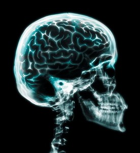

神通非神通
冯冯
君之剑 / 誊录
刚寄出拙稿《魔由心生》给《内明》月刊不久，这儿温哥华的佛堂又出了闹魔的事。不想多赘同类事件，可是，内明月刊赐刊该篇拙文之后，各方读者纷纷来函，到处都有闹魔的事发生，从美国到南洋，从台湾到香港，从大陆沿海到内地，都有人来信求救。尽管内明月刊前此已刊出过我的启事，请读者勿再来函叫我服务，也还是有人寄到内明，更多的是经由其他报纸刊物和友人转来。
我倒巴不得夙夜匪懈地一一服务这些热心错爱我的读者，但是个人的精神有限，时间也不够用，靠着在各刊“爬格子”拿的可怜稿酬，也不够买邮票来回覆每天二三十封的读者来函呀！如果把我的文学作品读者回函也算上，旧雨新知的书函加上，我就更是从早到晚写信也回不完了。我不是名成利就的富有大作家，雇不起秘书来代我回信和听电话，我只是个穷作者，没有职业，没有固定收入，全靠卖几篇文艺稿子骗点稿费生活。在各刊写佛教文章，大多数都属于义务无酬的。为了写佛教文章，我已经减少了文艺稿子，为了回信，我更少时间写卖钱的稿子了。并非在此叫穷，也不是开口要钱，更不是不愿服务大众。学佛人怎可不学慈悲，可是凡人到底是能力太少啊！心有余，力不足，怎能做到像佛菩萨的普度遍济？凡人终归是凡人，平庸的我，实在也并无任何神通，偶然得蒙佛恩，而略有所见，或暂时略为释放潜能，如此而已。除此以外，我仍是个血肉之躯，也有七情六欲，有‘色蕴’，有‘无明’，有‘烦恼’，有‘喜’有‘嗔’，有‘痴’有‘迷’，跟任何人一样，要吃要喝，要睡要憩，要大小便。也有贪心，也有我执，缺点一些也不少于任何人，或者还比别人多些，有些读者来函过分谬许，竟有过分尊称我为‘大菩萨’、 ‘大师’甚至称‘活佛’，真令我感愧得无地自容，惶恐得不知如何是好，我都不是，都不配，只是个学佛修行的俗子而已，毫无法力，前生也不是什么大菩萨。
我不是一个自满自大的人，也没有自我宣传的用心，上面说的函件太多，是事实，电话一天到晚响个没停，也叫我应付不了，各方人士对我的错爱过分与期盼太深，这是事实。可是他们已经把我这一个凡夫俗子太高估了，他们错认为我是一个有道行的人。也许是由于社会心理之中，有一种心理是在追寻超人的助力吧？可是我必须郑重声明，我只是一个庸俗平凡至极的俗人而已。没有神通，没有智慧，没有道行，不敢当任何过过当的称呼，也不敢以我自己的无知及萤火之光来误导他人，我说的写的个人浅薄经验，只是学佛人的诚意公开与大众切磋，及以之接引初机学佛者，并无自炫之意。事实上，纵是神通，也只不过是佛学之中的最皮毛肤浅的一环，佛学的精髓并不在于神通，学佛的目的如果只为了获得神通，那就大谬了，故此，佛陀切诫弟子妄言神通，当今佛教有识之士也都戒言神通，我非不知，为什么明知故犯呢？只为方便接引初机而已。
我所讲的，好比是托儿所及幼稚园的程度，希望有人听完儿童故事之后，进一步去上中学大学研究院。千万别误将我讲的一切错认为大学课本。读者若要认识真正的佛学，还须从经论入手才是！而且，我所说的天眼通什么的，实在也不能算是神通，那实在只是人类心力的一种潜能而已。当前各国主要大学都设有“超常心理学”（Para-psychology）来研究人类的精神心力超常现象，科学家努力如何释放人类心力的潜能，包括天耳通、神足通等等。一九八四年十二月三日之夜，美国ABC电视播布新闻，指出美苏两大强国的科学家，分别致力研究如何释放人类心力，用以探讨太空宇宙深处，并且两国都正在秘密发展人类超常心力作为武器，用心力侦察敌方军事机密设备，用心力引致敌方太空火箭爆炸，用心力摧毁敌方核子设施……美苏两国为何耗费亿兆计算研究发展这些人类心力潜能？难道那些科学家都是疯子吗？如果没有对心力有相当深入研究认识，敢发展这类计划吗？国会会批准拔款给毫无根据的研究方案吗？美苏的军事用意，固然可怕，非我们佛徒喜闻，但是至少也反映着科学的趋向。
所谓“神通”，是往昔科学未发展，不知其然的名称。在科学发展到太空物理学和进入次核子世界的今天，应该称之为“人类超常潜能”，这是我的愚见，神通即非神通！
心力潜力，人人都生来就有，可惜多数人不去释放它，不知运用它。如果人人都静定，潜能就会逐渐释放出来，如果用之与善，则造福自己和他人，用之于恶，就会变成害人不利己的可怕武器。
佛教的禅定，潜能迸发，举世公认，道非迷信，其实从其他途径也可获得潜能释放，外道禅，科学禅、“功夫”定……都可入定，都可进入程度各别的定境，释放多寡不同的潜能，无所谓“神通”不“神通”，只是，佛法以慈悲为根本，禅定的目的亦在于慈悲的发扬。如果经禅定而获得所谓天眼通天耳通之类，释放智慧潜能，对于人群有些善良的功能，或有造福，或有保健，或有助和平，或有助消除灾祸厄难，那又何必绝对禁绝谈神通呢？佛陀告诫弟子勿妄言神通勿滥用神通，可并未说凡是神通就是妖魔邪恶。或认为在这科学新世纪，把人类心力精神的潜能资源永远视为禁忌不肯予以探讨追寻，更不应曲解佛陀告诫愿意是“绝对不准用神通”！
有些人士，自己说神通，或欢喜宣扬自己怎样有神通，却不准别人谈神通，也有些人，自己常说有几龙来归依他，又如何看见什么菩萨，又如何用手一摸就治好别人的病，又如何为谁念咒使她全身的癌都立即消除，可是对于我实验禅定天眼通的报告，却大骂为“妖魔”，是“妄语”。这种态度，未免失诸过分偏激主观吧？
我有什么“神通”？不过是人人都有的潜能罢了，人人都可使之释放出来的，人人都可修到天眼通天耳通神足通，而且都比我修得好，神通更大百倍千倍，正是家家地底都是水源，谁肯掘井汲水就有水用，不肯开井，怎得井水？开了井，如果长久不汲水，水也会干涸。已开有井的呢，也不必自夸是天下第一泉，除此之外，别无他泉，世界那么大，难道真的只有谁一家才有井泉么？有人神通大，可感动得九条龙来归依他，也可手一摸就消灭了癌！阿弥陀佛，我们这些小人物，可没有那么大神通本领哟！顶多只能替人看看身体有什么病，告诉人家病源而已，这样也算是“着了魔”，也算是妄语，夫复何言？
人人生来就都已有潜能，人人生来都是平等的。说什么谁比谁高，谁比谁低，说什么谁才有专利神通，这都是匪夷所思的。我并非全世界唯一能透视人体的“天眼通”，也不是最好的，只可说是全世界千千万万个已经“开眼”的人之一，而且是很初步很肤浅。尚在实验学习阶段。至于来源，我的确是生来就有这种潜能的，与任何人一样。也许别人不曾留意自己的潜能，而我则注意到吧？你们人人都或多或少有些预感灾祸吗？不是到了一处陌生之地，突然感到似曾来过吗？何劳谁什么大师来替你灌顶什么的才有那些感觉？
连鸡犬和野生动物都有预感的潜能，能预知地震，蚂蚁也预知暴风雨来临，老鼠能预知船沉，猫狗能见鬼物，蜜蜂预知家运盛衰，鲸鱼能发音波联络全地球海洋的同类，蝙蝠能发雷达波搜索，蝙蝠与鸽子均能感觉地球南北磁场方向，蚯蚓预知气候变化，这些都经科学证明的本能及潜能，请问是哪一位法王哪一位大师为之灌顶而得的？
低等生物都有智慧潜能，连细菌都有识能，人类忝为万物之灵，反倒没有潜能？非得什么大师来灌顶才开窍？那么，世界各地的天生心力超常儿童与奇人，是不是各各都有幸亲近了大师呢？我从小就喜欢“画公仔画出肠”，三四岁就将猫狗人物都画出骨骼内脏来，老师说我神经有问题，问我，我说：“我看见是这样嘛！”我以为人人都与我一样，一些也不觉得自己有别于其他儿童。我看自身也是透视见骨的。长大以后，看见任何世称绝世美女都是一副副活动骨头和心肺肠胃，跟肉店吊着的半边猪半边牛，没有什么大分别，同样恶心，同样可怖！或者这也是我至今仍厌恶婚姻的原因之一，依然是个王老五，也算是不良副作用吧！
佛经说“红粉骷髅”，又说身是臭皮囊，这一点也不错。我从小就是这样观感了，连看到自己是臭皮囊也吃惊，世上也没有美色可以引诱得我，这是绝对可以肯定的，而我小时候又未读过佛经，又怎知道佛经说人体的秽脏呢？
有人在向佛教界说我是由他灌顶才有天眼通的，我闻之觉得太荣幸了，可真高攀不起！可惜我尚未有过此种殊胜受他或任何大师的灌顶呢！来过舍下会晤的陌生人，在过去四年当中，合计应该也有千人以上了，这些访客，来自世界各地，中西皆有，大多数是来叫我为他们X光透视身体内脏的，似乎还没有一个指出我透视不准确，人人都惊异我果然能看见其体内秘密病源。一个来自香港的八十高龄老太太，连姓名都不知的，我一见面就告诉她胆内有五颗大小不一的结石，她坚持五年前在港照过X光没有结石，我叫她去温哥华医院X光照验，她打电话来说我看的完全正确，她接受我的建议，住院开刀，割除了胆结石，身体比以前好多了。这是由甄先生带来的老太太，越来越健康，像这类事，我在这四、五年，不知做了多少，我为人家寻病源，助其解除痛苦，这也不对吗？ 有人还骂我是“魔”，是“假”，是“妖”，是“邪”，他为什么不去骂医生X光仪器呢？
有人甚至于在讲经时不讲佛经，却花时间来向听众指明我的姓名来大骂，说我是“天魔附体”， 是“骗子”，是“沽名钓誉”，是“妄语”，是“妄言神通，欺世盗名”……我虽不在场，我在家一面写稿子，也能听见他在千里之外骂我，也能看见他骂我时的情形，我也不生气，只是感觉到他太浪费大众诚心去听他讲经的时间，我只希望这位大师知道，我确无神通，而且这些潜能，人人均有，绝非专利的。而且，就算我过得一关考试，我能过得一两千人的考试吗？温哥华有几位中西名医，香港也有几位名医，都曾来考过我，甚至有疑难病症时，也来向我求诊，今天（1985年8月5日）与昨夜都有一位西医来叫我为他透视身体，另一位西医约下了下周来叫我看病，你说怪吗？他们为什么会这样“迷信”？
香港有一位名西医，来函求我为他透视眼睛，九龙一位名西医，去年带了全家子女来叫我为之透视，一一隐病都经诊出证实，他回香港为我大做宣传，颇有溢美之词，难道我能骗得住那么多位专科大医生吗？
这里我并非自我宣称，只是说明我确非“妄语”，亦非“着魔”，我未以之敛财，从未应邀上加拿大电视表演天眼，也未应邀任何学府演讲，更未挂牌营业，说到虚假，人生一切本来都是虚假的，天眼自然也脱不了是假相，而非实相，只不过这种潜能人人都有，可用于助人出苦脱厄，解除疾病，虽未敢云已符佛陀慈悲之旨，也不能担个什么“天魔附体”“妄言欺世”的重大罪名吧？谁在经堂上骂我，可真是太过责了，是非未明，真相未察，就是定别人罪，恐怕有失大师身份吧？我去年如何在大师面前为远在北京的陌生人遥诊，证实完全符合相貌与病情，当时目击者有二十人之多呀，我怎着了魔呢？
“魔”也罢，“妖”也罢，我问心无过，只愧未能深入经藏，亦未有大能力行菩萨慈悲道，多为些众生诊看病源，助之出苦厄，我巴不得日夜都不用睡息，也不必爬格子买文字为生，我可全力为人透视才好！那潜能是如井水般源源不绝的，只可惜，肉体会疲倦，无法配合潜能，也只好尽心量力而已，学不到菩萨，也只好做个“善魔”吧！不过，的确应付不了那么多人，若非事态严重，我都不回信了，看着那书房里几大纸箱累积的来函，我心中并非不感到歉疚！
原载香港《内明》第156期：1985年3月1日
图片出处：
自在罗汉 / 廖洪标
荷花 / 佛山济公 摄影
一行僧 / 刘传